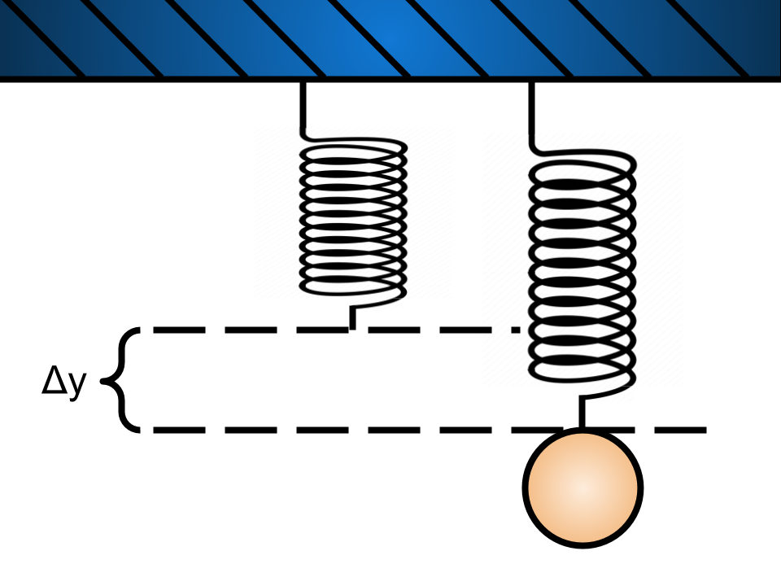

Most springs obey Hooke's Law: the magnitude of the force that the spring exerts is proportional to the amount it is stretched. This is mathematically expressed as:
Where is the force exerted by the spring, is the displacement from the spring’s equilibrium position, and is the spring constant. The larger the spring constant , the “stiffer” the spring. As a matter of fact, the constant is often referred to as the stiffness.
For the purpose of this lab, we will define the origin, the zero point, as spot at the end of the spring when it is hanging in its relaxed state. (See Figure 1 below.)

Hooke’s law is an excellent description for the behavior of springs, but it often applies to other things besides springs. It is also sometimes accurate for elastic materials such as rubber bands.
If we were to hang a mass, , from a rubber band, and wait for the system to come to equilibrium (stop moving), we could determine the spring force by using Newton’s second law and the force of gravity.
We will define the downward direction as positive. See Figure 2 for a free body diagram. Putting this together we have:
where in the first line of the equation we recognized that for a system in equilibrium, the acceleration is zero.
Thus we can use the mass and gravity to measure the spring force. From this we can measure the spring constant of the rubber band.
Question 1
Use Equation 1 and Equation 2 to write the equation for the spring constant.

A better way to determine the spring constant would be to vary the mass and measure the stretch for each mass. From many data points we could create a plot and perform a fit.
For this lab you will hang a zip-lock bag on a rubber band, and add mass to the bag. You will measure the length of the rubber band as you add more and more mass.
Question 2
a) Rewrite your answer to Question 1 to have stretch, , as a function of mass .
b) If you were to create a plot of stretch vs. mass, what would be the expression for the slope?
c) How would the slope change with stiffness of the spring or rubber band?
Another way to determine the spring constant is to hang a single mass from the spring. If you were to displace the mass from its equilibrium position slightly and release it, you would see the mass oscillate around the equilibrium position. This should sound very familiar.
In fact, this is another form of a simple harmonic oscillator.
In order to show this mathematically, we must first determine the net force on the mass when it is slightly displaced.

Figure 4 shows the spring in three different positions, labeled 1, 2 and 3. Position 1 shows the unstretched spring. Position 2 is the mass hanging from the spring in its equilibrium position, which is what we will call the zero position. Position 3 shows the mass when it has been displaced by an amount from equilibrium.
We already know that in position 2 the spring force is given by:
Then, if you look at the net force on the mass in position three you see that:
In the above we used the fact that for position 2.
Question 3
Use Newton’s second law and Equation 4 to determine the acceleration felt by the mass, .
Question 4
Is the oscillating mass a simple harmonic oscillator? Use your response to question 3 to help justify your answer. Hint: Look back at Lab 2 Week 1 if you need help.
Question 5
a) What is the expression for the angular frequency, , of this simple harmonic oscillator?
b) What is the period of oscillation?
Question 6
a) For a given mass, does a stiffer spring cause the oscillations to have greater or lesser frequency? Period?
b) Why do you think that increasing the mass increases the period? Hint: Think about this in terms of .
The second experiment for next week will involve your putting your phone in the zip-lock bag and then setting it in motion. You will use the “Acceleration without g” to measure the acceleration experienced by your phone. You will then use the acceleration to measure the period, and the spring constant of the rubber band.
As we do for a pendulum, we typically talk about the period of the position and not the acceleration. You will be measuring acceleration. Since we know that the mass on a spring is also a simple harmonic oscillator, we know that the position as a function of time looks like the following:
where is the amplitude or the initial displacement, and is the angular frequency.
Question 7
Does the acceleration experienced by the mass have the same period as the position? Justify your answer.
In this lab you will be mounting a rubber band to a horizontal surface for two exercises. The first exercise will require you to attach a variety of masses to your rubber band, and the second will require you to attach your phone to your rubber band. Figure 3 shows a possible setup. Note that the setup for both exercises will be similar.
Exercise 1
In this experiment you will be using some masses and your phone to measure characteristics of simple harmonic motion. You will build an apparatus and take data for analysis. Be sure to include a picture of your setup if you can!
The process of building your experiment will be similar to the procedure you used to make apparatus for your previous lab, &Ldquo;Pendulum.” There is a variety of ways in which you could build this apparatus. Please read through all of the instructions before considering alternate steps.
Collect all of the materials you will need for this setup: rubber band, tape, paper clips, zip-lock bags, makeshift weights (sugar, flour, salt, cornstarch, coins). Optional items include scissors and zip ties.
Find the location where you will build your apparatus. You should be fine with building this wherever you built your pendulum from the previous lab.

In this lab you will have your phone oscillating on a rubber band, so you will want to make sure your phone is not suspended too high, and that you can place a cushion underneath it.


Once you have your setup, it should look something like this:

You may consider alternate mounting methods if you have a solution that is better for your space.
Note: You will want to place a cushion under your apparatus in case the rubber band breaks, or your masses or phone slip.
With your apparatus built, you will want to prepare the masses and your data tables. You will be collecting data in two experiments — one with only masses, and one with your phone and other masses.
Exercise 2
Making your data tables now will help organization and reduce workload for next week.
Make a table in Google sheets as seen below for the first experiment.
| Length (m) | y (m) | Mass (kg) | Mass Description | Force (N) | k |
|---|---|---|---|---|---|
Your independent AVOCADO
Make another table in Google Sheets as shown below for the second experiment.
| Mass | time | time | number of periods (n) | T (s) | k | |
|---|---|---|---|---|---|---|
Exercise 3
At this point your apparatus should look like Figure 8 above.
Now we need to figure out what masses you can use with your apparatus.
For this you can use any household item that you can weigh, but we have several recommendations: coins, batteries, water, flour, sugar and salt.
The mass range you will want to use is anywhere from about 20 g to 1,000 g, depending on how thick your rubber band is. Most small rubber bands should support only about 350 g, while thicker ones can hold over 1,000 g.
Mixing and matching materials for your masses is certainly fine. Please note, however, that certain items should not be combined, such as water and batteries. Below are tables for how much each of your recommended materials weighs.
Figure 9 is an example of what your experiment will look like when you use household goods.


US Coins:
| Dollar | Half Dollar | Quarter | Dime | Nickel | Penny |
|---|---|---|---|---|---|
| 8.1g | 11.3g | 5.7g | 2.3g | 5.0g | 2.5g |
Batteries:
| AA | AAA | 9-V | D | C | |
|---|---|---|---|---|---|
| Alkaline | 23g | 11.5g | 45g | 135g | 65g |
| Lithium | 15g | 7.6g | 37g | - | - |
| Rechargable Ni-MH | 31g | 14g | - | 160g | 80g |
Household goods:
| Metric equivalent (ml) | Water | All Purpose Flour | Granulated White Sugar | Table Salt | |
|---|---|---|---|---|---|
| Density (g/ml) | 1g/ml | 0.6g/ml | 0.92g/ml | 1.26g/ml | |
| 1 cup | 237ml | 237g | 130g | 200g | 273g |
| 1 teaspoon | 4.9ml | 4.9g | 3.3g | 4g | 5.7g |
| 1 tablespoon | 14.8ml | 14.8g | 8.5g | 12.6g | 17g |
Note that 20 g is a good starting point so that your rubber band starts out taught.
Because your zip-lock bag is mounted via a paper clip, you can easily replace your bag when you move on to experiment 2. This will be useful if you are using messy masses such as flour or water.
Note: If you are using messy household goods, you can use two bags for experiment 2. Put your masses into a separate bag, then place that bag with your phone in the main bag as shown in Figure 11.


Exercise 4